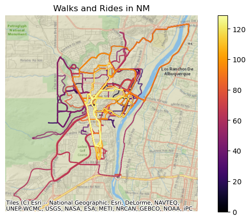
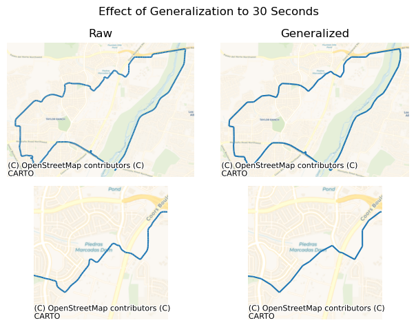
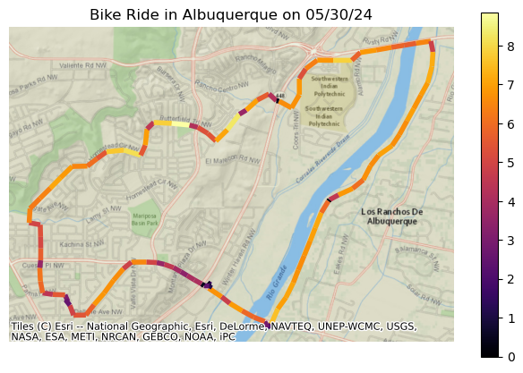
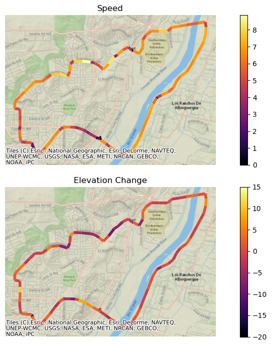
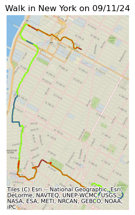
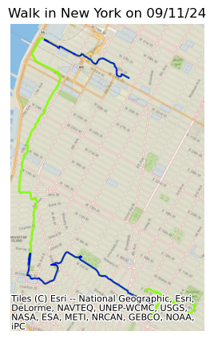
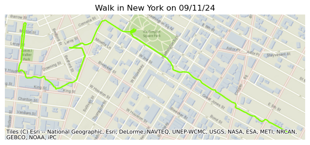
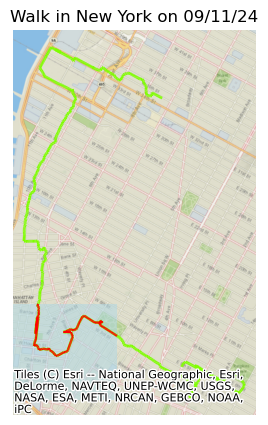

Simplification, speed and segments
The trek so far
In the first article, we took raw data from a trekking application, a GPX file in the form of standardized XML, parsed it to CSV, which we imported into a DataFrame with Pandas. Each record contains latitude, longitude, elevation and a time stamp. Using GeoPandas, we turned the latitude and longitude fields into POINT geometries and assigned an appropriate Coordinate Reference System so that we can work with the data geospatially. In the second article, we used MovingPandas to convert those POINTs into LINESTRINGs, allowing for calculations of distances not only along the route but to other locations or routes. We also learned how to auto-detect places along the trajectory where we paused.
In this article I will show how to incorporate the time dimension and calculate speed, duration, and other statistics, and how to split the path into segments. We already did this implicitly last time when we did stop detection, since a pause is based on time, and those pauses are natural points to split the route, and, not surprisingly, this is quite simple to do in MovingPandas. But first, we should look at simplification of the data.
Simplification
The raw data contains a level of granularity that is not necessarily needed, and can have a significant computational cost. The data can be simplified in different ways such as combining short time periods into longer ones, or smoothing by combining multiple paths within a certain area into a single, straight path. In this article, I’ll look at generalizing, down-sampling the time.
GPS trackers take frequent readings, seconds apart. Let’s look at the average time between readings in one of our treks. I’ll start by importing a GeoDataFrame with walks and bike rides in New Mexico, using the method described in the prior articles.
df = pd.read_csv('data/b4/combined.csv')
gdf = gpd.GeoDataFrame(
df,
geometry=gpd.points_from_xy(x=df.Lon, y=df.Lat),
crs=4269
).to_crs(32111)
idList = list(gdf.groupby(['Id']).nunique().reset_index().Id)
for i, track in enumerate(idList):
gdf.loc[gdf.Id == track, 'trajectory_id'] = i
gdf['Time'] = pd.to_datetime(gdf.Time)
tc = mpd.TrajectoryCollection(
gdf, 'trajectory_id',
t='Time', x='Lon', y='Lat'
)
print(tc)TrajectoryCollection with 130 trajectoriesax = tc.plot(
column='trajectory_id',
figsize=(10,5),
cmap='inferno',
legend=True
)
ax.set_title('Walks and Rides in NM')
ax.set_axis_off()
ctx.add_basemap(ax, crs=gdf.crs,
source=ctx.providers.Esri.NatGeoWorldMap);
Here are the total number of records, and the average time between readings:
def print_intervals_size(tc):
print(f'''
Avg sampling interval: {(round((np.mean(
[t.get_sampling_interval().seconds for t in tc.trajectories]
)), 2))} seconds
Total records: {np.sum([t.size() for t in tc.trajectories])}
''')
print_intervals_size(tc)Avg sampling interval: 5.92 seconds
Total records: 84319That’s way more than I need. A reading every 30 seconds is more than enough. I can use the generalize() function from MovingPandas to easily do so using the tolerance parameter:
tc_generalized = (
mpd.MinTimeDeltaGeneralizer(tc)
.generalize(tolerance=timedelta(seconds=30))
)
print_intervals_size(tc_generalized)Avg sampling interval: 33.28 seconds
Total records: 17258I’ll extract a single trajectory from before and after so we can see what happens with simplification. First I’ll print some basic information about the trek. Moving pandas provides functions such as get_duration and get_length to obtain information. I’ll include the print code here to demonstrate how to access the values and what functions are available. To access columns in the underlying DataFrame, you can use tc.df.SomeColumn. Python’s f-strings make it easy to generate these reports. ```python def trek_info(traj): print(f’’’ Date: {traj.get_start_time().strftime(‘%x’)} Activity: {‘Bike Ride’ if traj.df.Sport[0] == 1 else ‘Walk’} Duration: {traj.get_duration().seconds/60:.0f} minutes Distance: {traj.get_length(units=‘mi’):.1f} miles Avg Speed: {((traj.get_length(units=‘mi’)) /
(traj.get_duration().seconds/60**2)):.1f} mph Avg Temp: {(traj.df.Temp.mean()*9/5)+32:.0f} degrees F CRS: {traj.get_crs().to_epsg()} Points: {traj.size()} Bounds: ({“,”.join( map(str, [round(traj.to_crs(4269).get_bbox()[x], 3) for x in range(4)]))})
Max Elevation: {traj.get_max(column='Elev'):,} meters
Min Elevation: {traj.get_min(column='Elev'):,} meters
Avg Elevation: {traj.df.Elev.mean():,.0f} meters
Time Location (Lon/Lat)
Start: {
traj.get_start_time().strftime('%X')
} {
tuple([round(x,3) for x in
traj.to_crs(4269).get_start_location().coords[0]])
} degrees
End: {
traj.get_end_time().strftime('%X')
} {
tuple([round(x,3) for x in
traj.to_crs(4269).get_end_location().coords[0]])
} degrees
''')```python
traj_bike = tc.trajectories[52]
traj_bike_gen = tc_generalized.trajectories[52]
trek_info(traj_bike) Date: 05/30/24
Activity: Bike Ride
Duration: 63 minutes
Distance: 13.4 miles
Avg Speed: 12.8 mph
Avg Temp: 76 degrees F
CRS: 32111
Points: 681
Bounds: (-106.714, 35.144, -106.648, 35.183)
Max Elevation: 1,564 meters
Min Elevation: 1,504 meters
Avg Elevation: 1,528 meters
Time Location (Lon/Lat)
Start: 18:41:12 (-106.708, 35.147) degrees
End: 19:44:04 (-106.708, 35.148) degreestrek_info(traj_bike_gen)# Difference from `traj_bike`
Points: 105Here is a before and after plot:
from itertools import chain
f, (ax1, ax2) = plt.subplots(2, 2)
for i, traj in enumerate([traj_bike, traj_bike_gen]):
traj.plot(ax=ax1[i])
ctx.add_basemap(ax1[i], crs=traj.crs,
source=ctx.providers.CartoDB.Voyager)
for i, traj in enumerate([traj_bike, traj_bike_gen]):
traj.plot(ax=ax2[i])
ctx.add_basemap(ax2[i], crs=traj.crs,
source=ctx.providers.CartoDB.Voyager)
ax2[i].set_xlim(460000, 462000)
ax2[i].set_ylim(462000, 464000)
for axs in chain(ax1, ax2):
axs.set_axis_off()
ax1[0].set_title('Raw')
ax1[1].set_title('Generalized')
f.suptitle('Effect of Generalization to 30 Seconds')
f.tight_layout();
Speed and sundry
Before moving to speed calculations, let’s make a quick plot:
t_plot(traj_bike_gen, column='speed');
I just plotted the speed column, but a quick check will show there is no speed column.
traj_bike_gen.df.columnsIndex(['Id', 'Name', 'Lat', 'Lon', 'Elev', 'Temp', 'Weather', 'Sport',
'Sport_s', 'trajectory_id', 'geometry'],
dtype='object')Like Dorothy in Oz, you had the speed all along. MovingPandas does the calculation in the background for you. If you want an actual speed column, that’s easy enough:
tc_generalized.add_speed()
tc_generalized.trajectories[52].df.columnsIndex(['Id', 'Name', 'Lat', 'Lon', 'Elev', 'Temp', 'Weather', 'Sport',
'Sport_s', 'trajectory_id', 'geometry', 'mi/h', 'speed'],
dtype='object')Since my CRS is in meters, so is the speed. If I’d prefer miles per hour, I can specify the units:
tc_generalized.add_speed(overwrite=True, name='mi/h', units=('mi', 'h'))
tc_generalized.trajectories[52].df.iloc[5]Id Workout-2024-05-30-18-41-12
Name Albuquerque
Lat 35.150019
Lon -106.7125
Elev 1536
Temp 24.2
Weather 0
Sport 1
Sport_s Bike
trajectory_id 52.0
geometry POINT (457860.4830821714 460313.87076766626)
mi/h 13.109903
speed 5.860651
Name: 2024-05-30 18:43:54.251000, dtype: objectIn fact, we can automagically create distance, acceleration, direction, and time delta columns as well, all with arbitrary units. Here I’ll add a number of metrics in both metric and imperial units, by supplying the units and column names as parameters.
tc_generalized.add_distance(overwrite=True, name="distance (km)", units="km")
tc_generalized.add_distance(overwrite=True, name="distance (mi)", units="mi")
tc_generalized.add_distance(overwrite=True, name="distance (meters)", units="m")
tc_generalized.add_distance(overwrite=True, name="distance (feet)", units="ft")
tc_generalized.add_timedelta(overwrite=True)
tc_generalized.add_speed(overwrite=True, name="speed (ft/min)", units=("ft", "min"))
tc_generalized.add_speed(overwrite=True, name="speed (km/hour)", units=("km", "h"))
tc_generalized.add_speed(overwrite=True, name="speed (mi/hour)", units=("mi", "h"))
tc_generalized.add_acceleration(
overwrite=True, name="acceleration (mph/s)", units=("mi", "h", "s")
)
tc_generalized.add_acceleration(
overwrite=True, name="acceleration (kmph/s)", units=("km", "h", "s")
)
tc_generalized.add_direction(overwrite=True)
tc_generalized.add_angular_difference(overwrite=True)
(tc_generalized.trajectories[52]
.df.reset_index()
.loc[5, 'speed':'angular_difference'])speed 5.860651
mi/h 13.109903
distance (km) 0.175855
distance (mi) 0.109271
distance (meters) 175.85469
distance (feet) 576.951082
timedelta 0 days 00:00:30.006000
speed (ft/min) 1153.671431
speed (km/hour) 21.098343
speed (mi/hour) 13.109903
acceleration (mph/s) 0.104386
acceleration (kmph/s) 0.167992
direction 349.062474
angular_difference 70.594237
Name: 5, dtype: objectAnd now, I can generate summaries somewhat easier:
traj_bike_gen = tc_generalized.trajectories[52]
print(f'''
Total Distance:
{traj_bike_gen.df['distance (meters)']
.sum().item()/1000:>4.1f} kilometers
{traj_bike_gen.df['distance (mi)']
.sum().item():>4.1f} miles
Average Speed:
{traj_bike_gen.df['speed (km/hour)']
.mean().item():>4.1f} kilometers per hour
{traj_bike_gen.df['speed (mi/hour)']
.mean().item():>4.1f} miles per hour
''') Total Distance:
18.5 kilometers
11.5 miles
Average Speed:
19.2 kilometers per hour
11.9 miles per hourI’m going to also add an elevation delta. I’d like to plot the speed next to the change in elevation. So I’ll add the column.
traj_bike_gen.df['ElevD'] = (
[traj_bike_gen.df.iloc[i].Elev - traj_bike_gen.df.iloc[i-1].Elev
for i in range(len(traj_bike_gen.df))]
)Here is a plot of speed next to the elevation changes.
f, ax = plt.subplots(nrows=2, figsize=(10,7))
traj_bike_gen.plot(ax=ax[0], column='speed',
cmap='inferno', legend=True,
linewidth=4)
traj_bike_gen.plot(ax=ax[1], column='ElevD',
cmap='inferno', legend=True,
linewidth=4)
for i in range(2):
ctx.add_basemap(ax[i], crs=traj_bike_gen.crs,
source=ctx.providers.Esri.NatGeoWorldMap)
ax[i].set_axis_off()
ax[0].set_title('Speed')
ax[1].set_title('Elevation Change')
f.tight_layout();
Segmentation
The final topic I want to cover is route segmentation. This includes splitting the entire route by logical segments such as every 15 minutes or at stop points. It can also mean extracting a specific segment based on time or geographic location. MovingPandas has a variety of Splitter classes, depending on the purpose.
To demonstrate the split on stops, I’ll use the NYC walk from the last article, since I actually paused occasionally. In fact, the stop detector we used in that exercise could have given us the segments directly with it’s get_stop_segments() method, but here I’ll use the StopSplitter.
df_ny = gpd.read_file('data/ny_trek.gpkg')
df_ny['Sport'] = 17
ny_walk = (
mpd.TrajectoryCollection(
df_ny, 'trajectory_id',
t='Time', x='Lon', y='Lat'
).trajectories[0])
split_stop = (mpd.StopSplitter(ny_walk)
.split(
min_duration = timedelta(seconds=120),
max_diameter = 100))
split_stopTrajectoryCollection with 18 trajectoriesf, ax = t_plot(ny_walk)
for i in range(1,18,2):
split_stop.trajectories[i].plot(ax=ax, color='b')
I can use the TemporalSplitter to divide my trek into hour-long segments:
split_time = (mpd.TemporalSplitter(ny_walk)
.split(mode='hour'))
I can also extract a single segment based on an arbitrary time range using get_segment_between. I’ll create two datatime variables to see where I was between 4:00 and 5:00 local time.
t1 = datetime(2024, 9, 11, 19) # UTC Time
t2 = t1 + timedelta(minutes=60)
segment = ny_walk.get_segment_between(t1,t2)
t_plot(segment);
Finally, I can extract the portion of the path which lies in a specific geographical area by using clip and intersecting the path with a POLYGON or bounding box. Here is an example:
xmin, xmax, ymin, ymax = 191000, 192500, 210000, 211000
polygon = Polygon(
[(xmin, ymin), (xmin, ymax), (xmax, ymax), (xmax, ymin), (xmin, ymin)]
)
intersections = ny_walk.clip(polygon)
f, ax = t_plot(ny_walk)
gpd.GeoSeries(polygon).plot(ax=ax, color='lightblue',
alpha=0.5)
intersections.plot(ax=ax, color='r');
Conclusion
I hope you had fun with these articles, and were able to harness your own GPS data to create some lovely maps of your excursions. If you subscribe to one of the apps like Strava or AllTrails you can get get their maps to underlay with your routes. MovingPandas has many more functions such as the Smoother referred to earlier, the Cleaner to identify and remove outliers, an Aggregator which generalizes across trajectories within a collection, and it can track multiple people in a single trajectory collection.
If you are already comfortable in Python’s data science space, but haven’t yet worked with geospatial data, I hope you were intrigued enough to look into it more, as explicitly including geospatial dimensions in your analyses is enriching without being terribly difficult. If you are a Pythonista without any DS experience, maybe this will help you jump in. I find that Python is such a simple, expressive language, and the libraries of Pandas, GeoPandas, and MovingPandas are such a joy to work with.
Happy Coding ## Additional Code To make the article easier to read, I have put code here which would need to be run before trying any of the code examples in the article. This includes the required libraries and the helper function I use when making the graphs. All code can be found on my GitHub repo.
import pandas as pd
import geopandas as gpd
import movingpandas as mpd
import matplotlib.pyplot as plt
import contextily as ctx
import numpy as np
from shapely.geometry import Polygon
from datetime import datetime, timedelta
import warnings
warnings.filterwarnings('ignore')
def t_plot(traj,
figsize=(8,5),
source=ctx.providers.Esri.NatGeoWorldMap,
title=None,
column=None
):
sport = 'Bike Ride' if traj.df.Sport[0] == 1 else 'Walk'
f, ax = plt.subplots(figsize=figsize)
if column:
traj.plot(ax=ax, lw=3, column=column,
cmap='inferno', legend=True)
else:
traj.plot(ax=ax, lw=3, color='cyan')
ctx.add_basemap(ax, crs=traj.crs,
source=source)
ax.set_axis_off()
if title:
ax.set_title(title)
else:
ax.set_title(f'{sport} in {traj.df.Name[0]} on {traj.df.index[0].strftime('%x')}')
return f, ax
annot_props = dict(
xytext=(3, 1),
textcoords="offset fontsize",
c='r', weight='bold', ha='center',
arrowprops=dict(arrowstyle='-', ec='orange')
)
def trek_info(traj):
print(f'''
Date: {traj.get_start_time().strftime('%x')}
Activity: {'Bike Ride' if traj.df.Sport[0] == 1 else 'Walk'}
Duration: {traj.get_duration().seconds/60:>3.0f} minutes
Distance: {traj.get_length(units='mi'):>5.1f} miles
Avg Temp: {(traj.df.Temp.mean()*9/5)+32:.0f} degrees F
CRS: {traj.get_crs().to_epsg()}
Points: {traj.size()}
Bounds: ({", ".join(
map(str,
[round(traj.to_crs(4269).get_bbox()[x], 3)
for x in range(4)]))})
Max Elevation: {traj.get_max(column='Elev'):,} meters
Min Elevation: {traj.get_min(column='Elev'):,} meters
Avg Elevation: {traj.df.Elev.mean():,.0f} meters
Time Location (Lon/Lat)
Start: {
traj.get_start_time().strftime('%X')
} {
tuple([round(x,3) for x in
traj.to_crs(4269).get_start_location().coords[0]])
} degrees
End: {
traj.get_end_time().strftime('%X')
} {
tuple([round(x,3) for x in
traj.to_crs(4269).get_end_location().coords[0]])
} degrees
''')